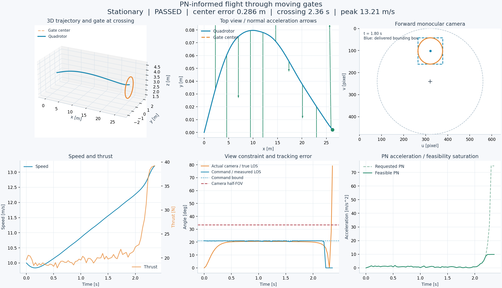
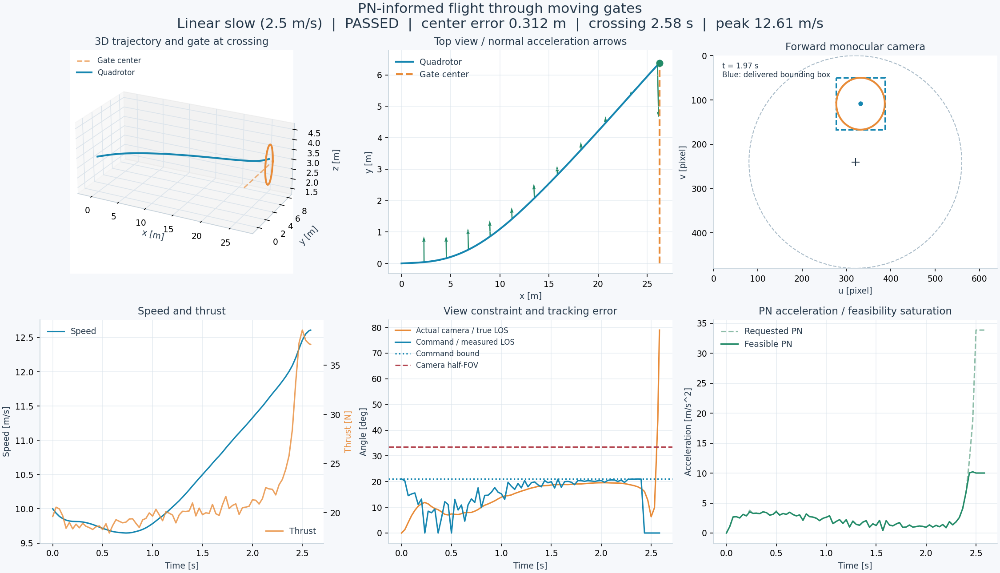
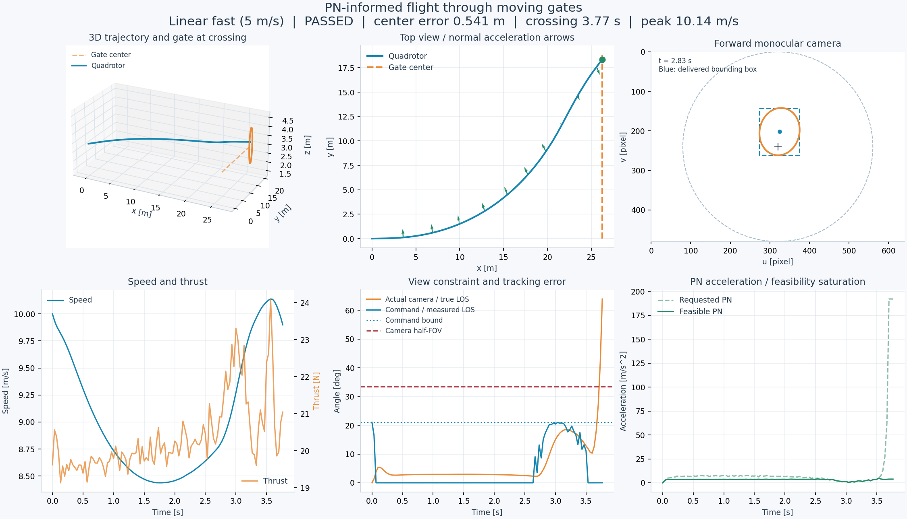
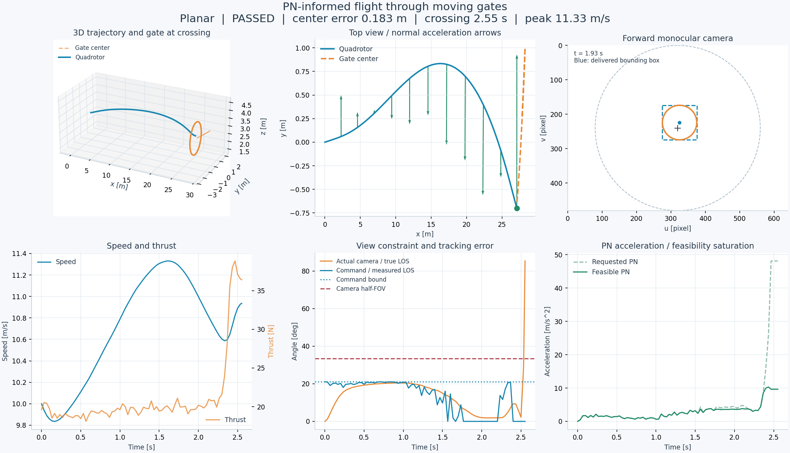
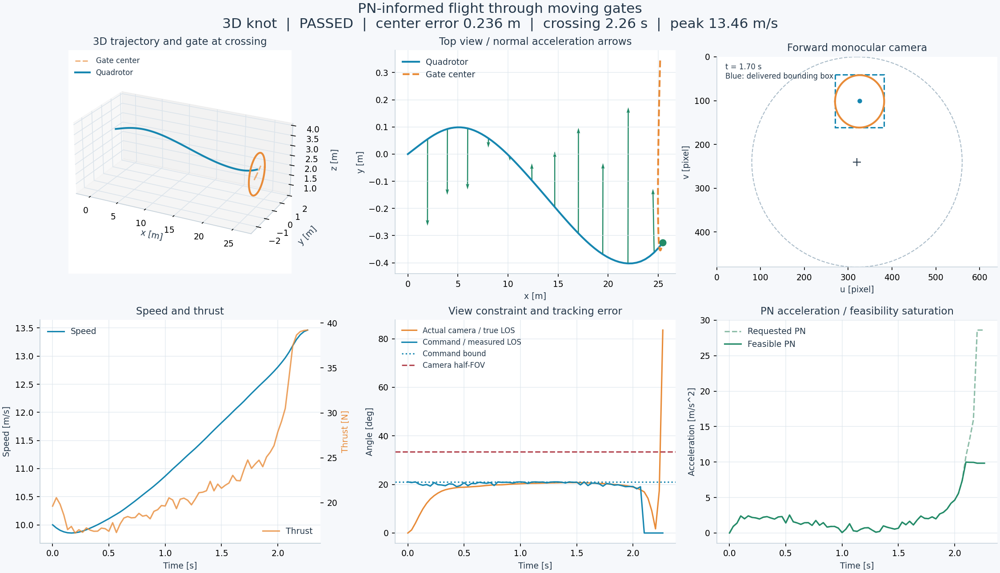
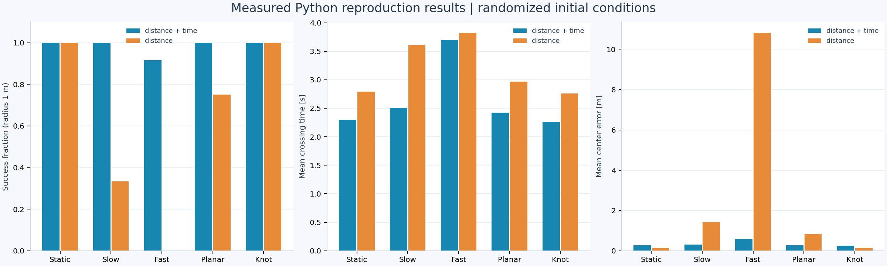
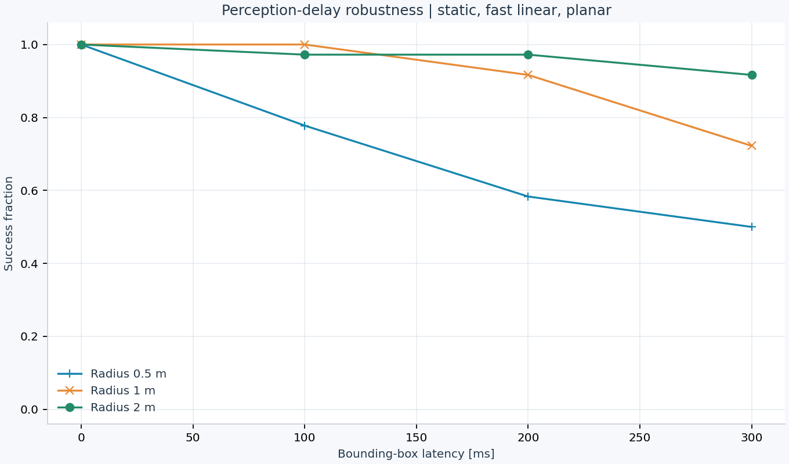
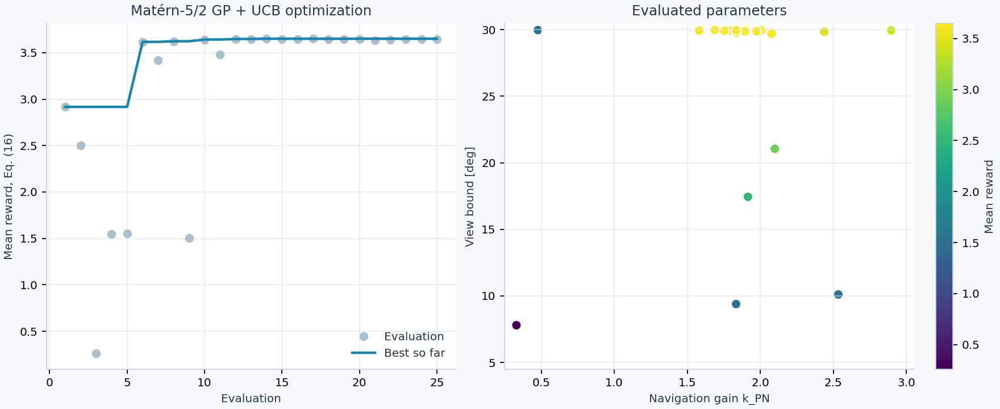
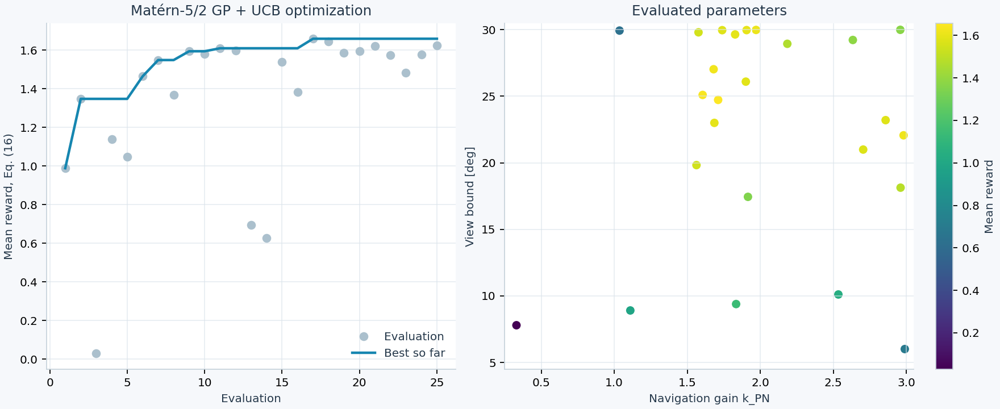

Stationary
passed · 中心误差 0.286 m · 时间 2.355 s

完整 Python 仿真与可视化结果 · 所有数据由代码实际运行生成
采用独立四旋翼与单目相机模型；参数差异会影响与论文的数值对照。复现报告
passed · 中心误差 0.286 m · 时间 2.355 s

passed · 中心误差 0.312 m · 时间 2.583 s

passed · 中心误差 0.541 m · 时间 3.765 s

passed · 中心误差 0.183 m · 时间 2.552 s

passed · 中心误差 0.236 m · 时间 2.265 s



k = 2.0009 · γ = 29.9668° · 训练奖励 3.6516
全部评估记录
k = 1.7114 · γ = 24.7251° · 训练奖励 1.6584
全部评估记录